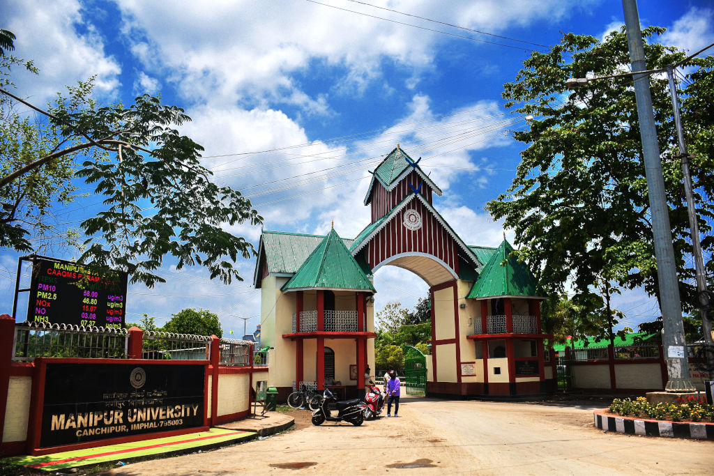

ABOUT MANIPUR UNIVERSITY
Manipur University was established on 5th June 1980 under the Manipur University Act. 1980 (Manipur Act 8 of 1980), as a teaching-cum-affiliating University at Imphal with territorial jurisdiction over the whole of the state of Manipur and it was converted into a central university w.e.f. 13/10/2005. The Manipur University Act No 54 of 2005 received the assent of the President on 28/12/2005
